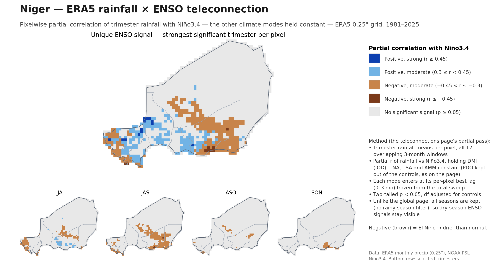
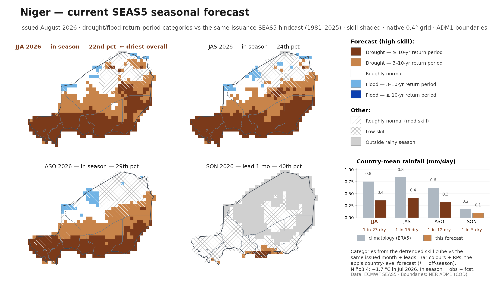

Two slides: ENSO's unique historical rainfall signal over Niger
(pixelwise partial correlation, other climate modes held constant), and what the
current SEAS5 issuance says about the ongoing JJA–SON rainy season — a severely
dry 2026 season across the agricultural belt under a strong developing El Niño.

Slide 1. ERA5 rainfall × ENSO, pixelwise at the native
0.25° grid, 1981–2025 — the ds-teleconnections partial-correlation pass zoomed to
Niger, with tiles for the JJA–SON rainy-season trimesters. Once the Atlantic modes
(TNA, TSA, AMM) and IOD are held constant, ENSO's unique signal is moderate:
drying over the south-central/eastern belt peaking in JAS, with a wetter patch in
the west in JJA.

Slide 2. The current SEAS5 issuance (August 2026) for
Niger's rainy season — JJA, JAS and ASO are in-season (observed months blended
with the forecast, as in the app), SON at lead 1. Alerts-app colours: drought/flood
3-yr and 10-yr return-period categories from the detrended skill cube,
skill-shaded. The whole southern agricultural belt sits in ≥10-yr RP drought at
high skill through the season; country-level RPs run 1-in-23 (JJA) to 1-in-12
(ASO) dry.
Generated by analysis/png_enso_slides.py --country ner.
Data: ERA5 monthly precipitation (0.25°), NOAA PSL climate indices, the
seas5-skill detrended skill cube and country-level app export (0.4°), NER ADM1
CODs. Rerun the script and commit to refresh.